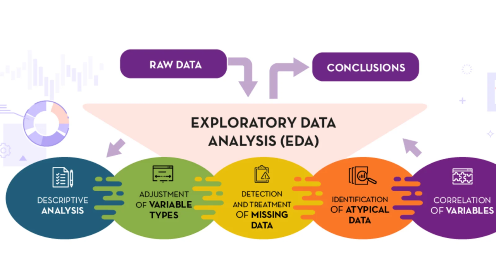
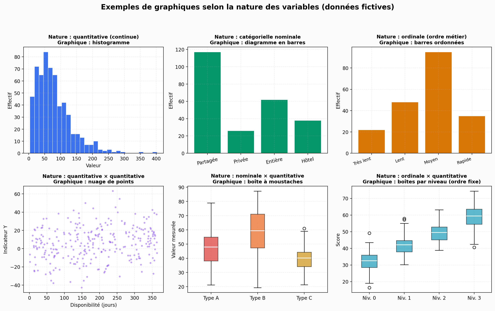
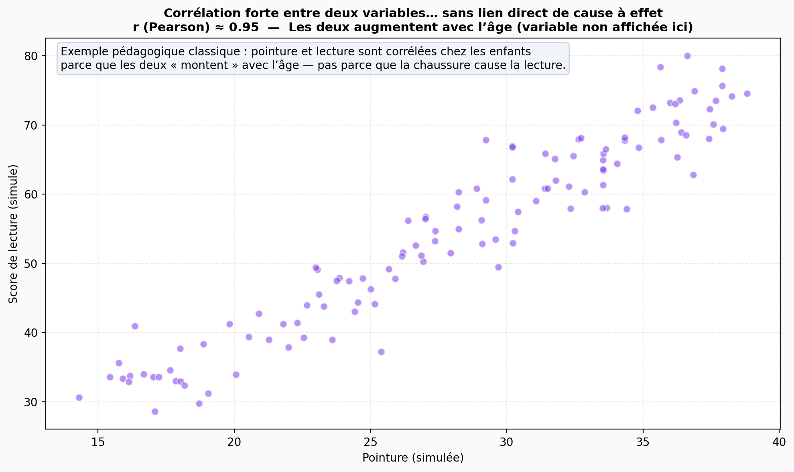
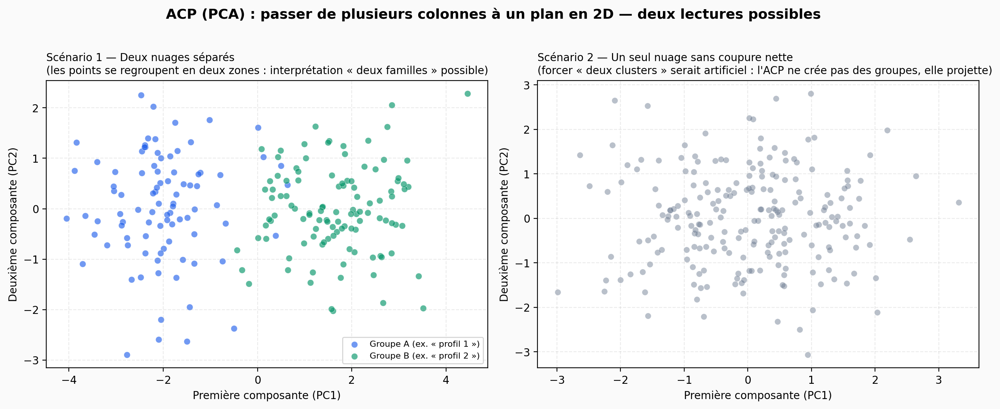

Phase 3 : Exploration (EDA) — du Data Warehouse au diagnostic pour la Mairie
Rappel. Les phases précédentes vous ont mené du Data Lake (fichiers bruts) au pipeline ETL, puis au chargement dans un entrepôt relationnel. Vous savez désormais isoler le périmètre « Élysée », enrichir les données et structurer un schéma SQL. La Phase 3 ne consiste pas à « refaire » l’ingénierie : elle consiste à interroger la donnée déjà consolidée pour répondre aux questions du Chapitre 1 — prix, ressenti, image — avec des graphiques et des chiffres vérifiables.
Pour démarrer l’analyse exploratoire (EDA) sur une base propre et homogène (mêmes types, mêmes contraintes pour toute la classe), nous mettons à votre disposition un jeu tabulaire nettoyé et ses scripts d’import PostgreSQL. Votre première mission dans ce chapitre est de recréer localement ce petit Data Warehouse de référence, puis de vous approprier le dictionnaire des variables : sans cette lecture métier, aucun graphique n’aura de sens pour la Maire.

1. Télécharger le dossier DataWarehouse et importer les données dans PostgreSQL
Téléchargez l’archive DataWarehouse.zip (dossier complet : CSV tabulaire nettoyé, script SQL d’import, fichier d’aide pour la ligne de commande). Décompressez-la à un emplacement fixe sur votre machine (ex. : C:\projets\ImmoVision\DataWarehouse ou équivalent).
Prérequis. PostgreSQL installé, service démarré, et utilitaire psql accessible dans le terminal (variable d’environnement PATH). Il doit exister une base nommée immovision (créez-la une fois si besoin) et un utilisateur autorisé — en pratique le script d’exemple utilise -U postgres, comme dans le fichier fourni.
Première installation : créer la base immovision
Sous psql en administrateur (souvent utilisateur postgres) :
CREATE DATABASE immovision;Quittez puis reconnectez-vous sur immovision pour lancer l’import ci-dessous.
Ouvrez une invite de commandes (cmd ou PowerShell), placez-vous dans la racine du dossier décompressé DataWarehouse, puis exécutez exactement les deux lignes prévues dans sql\postgres\CMD.txt (chemins relatifs identiques sous Windows) :
cd sql/postgres
psql -U postgres -d immovision -f import_elysee_tabular.sql
Ce script crée la table elysee_tabular et charge le fichier CSV postgres/elysee_tabular.csv. En cas d’erreur d’authentification, configurez le mot de passe PostgreSQL (variable PGPASSWORD sous Windows, ou fichier pg_hba.conf / compte dédié) selon votre installation locale — le support du cours ne peut pas deviner votre politique de sécurité.
Vous pouvez vérifier rapidement que l’import a réussi :
psql -U postgres -d immovision -c "SELECT COUNT(*) FROM elysee_tabular;"2. Comprendre le Data Warehouse « clean » : dictionnaire des colonnes
La table elysee_tabular est volontairement compacte : chaque ligne est une annonce du périmètre concerné, avec des champs déjà encodés ou numérisés pour l’analyse (et non plus le catalogue brut des 70+ colonnes d’Airbnb). Avant tout scatter plot ou jointplot, lisez attentivement la signification de chaque variable — notamment les codes entiers, qui ne sont pas toujours des « notes » arbitraires mais des mappings fixes issus du pipeline.
Déplier : description détaillée des colonnes de elysee_tabular
id
Pas une catégorie : identifiant numérique de l’annonce (ex. 2871271). Aucun « 1 = … » ici.
calculated_host_listings_count
Nombre entier (ex. 1, 25, 184) = nombre d’annonces du même hôte. Plus la valeur est grande, plus l’hôte a d’annonces sur la plateforme.
availability_365
Nombre entier de 0 à 365 = jours de disponibilité déclarés sur l’année.
Ex. : 0 → pas ouverte à la réservation sur la période considérée ; 365 → disponible toute l’année (selon la définition Airbnb).
host_response_rate_num
Nombre décimal entre 0 et 100 (pas un code de catégorie) : part des messages auxquels l’hôte répond, comme un pourcentage.
Ex. : 100.0 → 100 % ; 53.0 → 53 % ; vide → pas d’info.
room_type_code (mapping fixe)
| Code | Signifie (catégorie d’origine Airbnb) |
|---|---|
| 0 | → Shared room (chambre partagée) |
| 1 | → Private room (chambre privée) |
| 2 | → Entire home/apt (logement entier) |
| 3 | → Hotel room (chambre type hôtel) |
| −1 | → type inconnu ou valeur non reconnue |
host_response_time_code (mapping fixe, ordinal : plus petit = plus rapide)
| Code | Signifie (catégorie d’origine Airbnb) |
|---|---|
| 0 | → within an hour (dans l’heure) |
| 1 | → within a few hours (quelques heures) |
| 2 | → within a day (dans la journée) |
| 3 | → a few days or more (plusieurs jours) |
| −1 | → délai inconnu ou non reconnu |
standardization_score (3 valeurs = 3 catégories résumées en chiffre)
| Score | Signifie (logique pipeline image) |
|---|---|
| 1 | → « Appartement industrialisé » (style très standardisé / catalogue) |
| 0 | → « Appartement personnel » (plus vécu, moins catalogue) |
| −1 | → « Autre » (pas classable, pas d’image, erreur, etc.) |
neighborhood_impact_score (3 valeurs = 3 catégories résumées en chiffre)
| Score | Signifie (logique pipeline texte) |
|---|---|
| 1 | → « Hôtélisé » (processus pro, peu de lien humain, etc.) |
| 0 | → « Voisinage naturel » (échanges, vie de quartier, etc.) |
| −1 | → « Autre » (ambigu, texte absent, erreur, etc.) |
Une fois la table importée et le dictionnaire assimilé, vous enchaînez avec le parcours d’analyse ci-dessous. Il est découpé en quatre blocs, calqués sur une séance type de trois heures : chaque bloc mélange cours (méthodes, repères professionnels) et travail attendu (consignes, livrable court). Vous pouvez aussi étaler ces blocs sur plusieurs séances selon votre emploi du temps.
3. Parcours EDA — Bloc A : cadrage métier et feuille de route
Imaginez que vous présentiez votre premier graphique à la Maire de Paris. Elle vous interrompt : « C’est joli, mais qu’est-ce que ça répond à ma question ? » Ce moment, tout le monde l’a vécu une fois. Il distingue l’analyste qui cadre son travail de celui qui accumule des courbes parce que le logiciel les propose. Le Bloc A ne produit encore aucune figure définitive : il construit la feuille de route — le document qui dit : voici ce que nous cherchons à éclairer, voici avec quelles colonnes, voici comment nous le montrerons. C’est une étape de traduction entre le langage du politique (inquiétudes, quartiers, « tourisme qui étouffe ») et le langage de la table SQL (identifiants, pourcentages, codes entiers).
Pourquoi ne pas ouvrir Python tout de suite ?
L’analyse exploratoire des données, souvent abrégée EDA (Exploratory Data Analysis), désigne l’ensemble des démarches pour comprendre un jeu de données avant d’en tirer des conclusions fermes. Mais « explorer » ne veut pas dire « tout tracer au hasard ». En pratique professionnelle, on distingue souvent la pêche au graphique — on fait défiler des corrélations jusqu’à trouver quelque chose d’intéressant — de la démarche hypothético-déductive : on part d’une question, on choisit des indicateurs, on vérifie si les données soutiennent ou infirment une intuition. Pour un rapport destiné à un décideur, la seconde approche est la seule défendable : elle permet d’expliquer pourquoi ce graphique existe, et ce qu’il ne montre pas.
Questions métier, hypothèses et opérationnalisation
Une question métier est une interrogation formulée dans les termes du commanditaire : par exemple, « les logements les plus disponibles à la location sont-ils aussi ceux qui ressemblent le plus à des catalogues ? » Elle n’est pas encore mesurable telle quelle. Pour l’opérationnaliser, c’est-à-dire la rendre calculable, vous devez la relier à des variables présentes dans votre table — des colonnes dont vous connaissez le sens grâce au dictionnaire (section 2).
Une hypothèse est une réponse provisoire et testable à cette question : « Je soupçonne que oui, et je vais vérifier si, dans les données, la disponibilité annuelle et le score de standardisation tendent à varier ensemble. » L’hypothèse n’est ni un souhait ni une conclusion : c’est un pari intellectuel honnête que vous acceptez de falsifier — c’est-à-dire de rejeter si les chiffres ne suivent pas.
Souvent, le phénomène que visite la Maire (la « gentrification », le « côté usine » des annonces) n’a pas de colonne qui s’appelle gentrification. On utilise alors une ou plusieurs variables proxy (ou variables de substitution) : des quantités qui approximent le concept. Par exemple, le nombre d’annonces par hôte (calculated_host_listings_count) est un proxy possible de la concentration de l’offre entre peu d’acteurs ; la disponibilité sur 365 jours (availability_365) peut servir de proxy d’un usage proche de la location courte ; les scores standardization_score et neighborhood_impact_score traduisent les dimensions « image catalogue » et « texte hôtelier » déjà résumées par le pipeline. Le mot proxy vient de l’anglais : un mandataire. La variable ne remplace pas le concept social — elle en donne une empreinte mesurable. Votre devoir d’ingénieur est de le dire clairement dans le rapport : « Nous mesurons X pour parler de Y, avec telle limite. »
Remarque. Si aucune colonne ne permet d’approcher une question du Chapitre 1, ce n’est pas un échec : c’est un résultat de cadrage — vous le notez dans les limites (« Cette question ne peut pas être traitée avec elysee_tabular seul »). C’est aussi une compétence professionnelle rare : savoir ce qu’on ne peut pas conclure.
Typer vos variables avant de choisir un graphique
Les logiciels de visualisation imposent des règles implicites : certains graphiques ont du sens seulement si les types de données sont corrects. Avant de remplir votre tableau, classez chaque colonne utilisée dans l’une des familles suivantes — la nomenclature est standard en statistique appliquée :
- Identifiant : valeur unique par ligne, sert à l’appariement ou au filtrage, pas à calculer une moyenne. Chez vous,
idest l’identifiant d’annonce. Tracer un histogramme desidn’a aucun sens métier. - Variable quantitative (numérique) : une grandeur mesurée sur une échelle où les écarts ont un sens. Exemples :
availability_365(0 à 365),calculated_host_listings_count(entier positif),host_response_rate_num(0 à 100 en pourcentage). On peut parler de moyenne, médiane, écart-type — avec prudence si la distribution est très asymétrique. - Variable ordinale : catégories codées par des entiers, mais avec un ordre naturel. Ici,
host_response_time_codeest ordinal : 0 = plus rapide que 1, etc. L’écart « 3 − 0 » n’est pas forcément comparable à l’écart « 2 − 1 » (échelles de réponse discrètes), mais l’ordre guide l’interprétation. - Variable catégorielle nominale : catégories sans ordre logique entre elles.
room_type_code(chambre partagée, privée, logement entier…) est typiquement nominale : le code 2 n’est pas « plus grand » que le code 1 au sens social — c’est un étiquetage. Les barres ou les tableaux croisés conviennent mieux que la corrélation de Pearson brute sans réflexion.
Les scores standardization_score et neighborhood_impact_score prennent trois valeurs (−1, 0, 1) avec une signification métier ordonnée ou trichotomique : ils se comportent souvent comme des échelles de synthèse plutôt que comme de simples comptes. Vous les traiterez avec soin (effectifs par modalité, prudence sur les −1) — le Bloc B approfondit ce point.

La feuille de route en trois colonnes
L’outil le plus simple reste le meilleur : un tableau à trois colonnes que vous remplissez avant la moindre courbe :
- Question ou hypothèse — une phrase qui pourrait être lue à voix haute devant la Maire.
- Variable(s) retenue(s) — les noms exacts des colonnes dans
elysee_tabular, et en une courte parenthèse le rôle de proxy pour quoi. - Graphique ou analyse envisagé(e) — par exemple : histogramme, diagramme en barres, boîte à moustaches (boxplot), nuage de points (scatter plot), matrice de corrélation. Vous n’êtes pas engagé à l’infini : si le premier choix s’avère illisible, vous pourrez l’ajuster — mais vous aurez une intention documentée.
Si une ligne de ce tableau reste incomplète — surtout la colonne « variables » — c’est le signal que la question n’est pas encore operationalisable avec ce jeu de données. Parfois il manque une donnée externe (prix au m², bruit mesuré en décibels) : notez-le explicitement ; cela fera partie de vos limites et montrera que vous ne confondez pas souhait politique et preuve statistique.
Exemples de chaînes « question → proxy » (à adapter)
Pour vous aider sans imposer une seule bonne réponse, voici des chaînages possibles — à valider ou critiquer selon votre lecture du Chapitre 1 :
- « Peu d’acteurs concentrent-ils une grande part de l’offre ? » → proxy :
calculated_host_listings_count; graphiques possibles : histogramme ou courbe de fréquences cumulées pour visualiser la concentration. - « Les annonces très disponibles toute l’année se distinguent-elles par un profil “catalogue” ou “hôtelier” ? » → proxies :
availability_365avecstandardization_scoreouneighborhood_impact_score; nuage de points ou boîtes à moustaches par groupe de disponibilité (après découpage en classes). - « La réactivité type “service client” se marque-t-elle dans les métadonnées ? » → proxies :
host_response_rate_num,host_response_time_code; comparaisons par type de logement (room_type_code).
Consignes (à réaliser individuellement)
- Relire le Chapitre 1 et noter au moins 5 questionnements (qui découle des 3 questionnements majeures) que vous comptez traiter (ou tenter de traiter) avec
votre table de données SQL. - Pour chacun, associer au moins une colonne de votre Table SQL et préciser si la variable est identifiant, quantitative, ordinale ou catégorielle nominale, en une ligne d’explication si nécessaire.
- Pour chaque ligne du tableau, définir précisément le graphique envisagé : type (histogramme, diagramme en barres, boîte à moustaches, nuage de points, etc.), variables en abscisse et en ordonnée (ou tableau croisé / répartition conditionnelle), et tout regroupement ou filtre prévu (par exemple exclusion ou traitement à part des scores −1, découpage de
availability_365en classes).
4. Parcours EDA — Bloc B : description univariée (premier contact avec les colonnes)
Le Bloc B correspond à la phase de description univariée : vous étudiez chaque variable séparément (une par une), avant de les croiser dans les blocs suivants. L’objectif est simple : pour chaque colonne de votre table, produire un mini rapport de description — quelques chiffres, un tableau d’effectifs ou un graphique adapté — en suivant une grille de questions qui dépend de la nature de la variable (quantitative, ordinale, nominale, identifiant…). La Figure « types de graphiques » du Bloc A vous rappelle quels dessins sont en général lisibles selon ce type.
Où travaille-t-on ? Python + PostgreSQL + notebook « EDA »
Vous réalisez ce travail dans un script Python qui se connecte à votre base PostgreSQL (la même que vous avez importée avec le dossier DataWarehouse), lit la table (par ex. elysee_tabular), puis enregistre le résultat dans un objet appelé DataFrame Pandas.
Un DataFrame (Pandas), c’est l’équivalent d’un tableau : les lignes sont les annonces, les colonnes sont les variables (id, availability_365, etc.). C’est la forme la plus pratique en Python pour calculer des moyennes, compter des modalités et tracer des graphiques. Toutes les manipulations d’analyse de ce module se feront sur ce même DataFrame (copies éventuelles pour des tests, mais la référence reste ce tableau en mémoire).
Pour bien voir le code, les sorties et les figures au même endroit, utilisez de préférence un Jupyter Notebook (fichier .ipynb) que vous pouvez nommer par exemple EDA.ipynb.
Étape préalable : remplir les cases vides avec −1
Au moment où vous chargez la table depuis SQL, certaines cellules peuvent être vides (en base, ce sont souvent des NULL ; dans Pandas, elles apparaissent comme « manquantes »). Pour simplifier la suite des calculs et harmoniser avec la logique du cours (valeur explicite « non disponible »), faites un traitement rapide : remplacez toutes les valeurs manquantes par −1, en documentant dans une phrase que, pour l’analyse, −1 signifie « information non disponible » (à distinguer des 0 métier lorsqu’ils existent, par ex. une disponibilité nulle).
En résumé du flux : vous partez d’un DataFrame avec des champs vides → vous appliquez ce remplissage par −1 → vous travaillez ensuite sur ce DataFrame pour rédiger, pour chaque variable, votre mini rapport univarié.
Que mettre dans le mini rapport d’une variable ? (selon sa nature)
Pour chaque colonne (sauf peut‑être l’identifiant id, qu’on ne « décrit » pas comme une mesure), indiquez au minimum ce que la nature de la variable impose de regarder :
- Quantitative (nombres continus ou entiers mesurés) : effectif pris en compte, min / max ou quartiles, moyenne ou médiane si utile, histogramme ou courbe pour voir la forme de la distribution, commentaire sur les valeurs très extrêmes si visibles.
- Ordinale ou code à plusieurs niveaux : effectif par modalité (y compris le −1 après remplissage), barres dans l’ordre métier si l’ordre compte.
- Nominale (catégories sans ordre, ex. type de logement) : tableau ou barres des effectifs par catégorie, avec libellés lisibles (pas seulement 0, 1, 2).
- Scores du projet (−1, 0, 1) : pourcentage dans chaque classe ; dire explicitement combien de lignes sont en « non disponible » (−1) après votre traitement.
Consignes
- Créer un notebook (de préférence
EDA.ipynb) dans lequel un script Python se connecte à PostgreSQL, charge la table dans un DataFrame Pandas, puis remplace les valeurs manquantes par −1 (avec une note écrite sur la signification de −1). - Pour chaque variable utile à l’analyse, rédiger un mini rapport de description univariée (texte court + tableau ou graphique selon la nature de la variable), en suivant la grille ci-dessus.
- Conserver toutes les étapes dans ce notebook : c’est votre trace ; les blocs suivants réutiliseront le même DataFrame (ou une copie issue de ce pipeline).
5. Parcours EDA — Bloc C : les relations entre variables (pour répondre au cadrage)
Au Chapitre 1, la Maire a posé des questions ; au Bloc A, vous avez rempli une feuille de route : pour chaque question, quelles colonnes vous utilisez et quel graphique vous prévoyez (type, axes, filtres). Au Bloc B, vous avez décrit chaque colonne seule. Le Bloc C enchaîne : vous exécutez cette feuille de route — pour chaque ligne du tableau qui prévoit un croisement entre variables, vous produisez le graphique correspondant sur votre DataFrame et vous l’interprétez. Ce sont des liaisons observées dans l’échantillon, pas des preuves de cause sans travail supplémentaire, mais le matériau central du rapport.
Une ligne du tableau du Bloc A = une mini-mission dans le Bloc C
Si une ligne dit par exemple « nuage de points : availability_365 en fonction de calculated_host_listings_count », le Bloc C contient ce nuage et le commentaire associé. Si une autre ligne dit « boîtes à moustaches du score d’image par type de logement », vous tracez ces boîtes. Vous ne rajoutez pas de graphiques hors plan : vous déroulez le tableau du Bloc A — une ligne avec croisement = un bloc graphique + texte dans la partie « Croisements » du notebook.
Deux familles de questions très concrètes
Dans la pratique, vous tomberez presque toujours sur l’un de ces deux cas — la figure « types de graphiques » du Bloc A les rappelle :
- Deux grandeurs numériques (ex.
availability_365etcalculated_host_listings_count) : on trace un nuage de points. On lit visuellement si, quand l’une augmente, l’autre a tendance à augmenter (ou à diminuer), ou si le nuage est sans forme claire. - Une catégorie et une grandeur numérique (ex.
room_type_codeetavailability_365) : on compare des boîtes à moustaches ou des moyennes par groupe, en gardant à l’esprit l’effectif dans chaque catégorie.
Vous continuez dans le même notebook EDA.ipynb (partie « Croisements ») et le même DataFrame que le Bloc B.
Chercher la « source » d’une liaison (sans confondre avec la cause)
Si deux colonnes semblent varier ensemble, ne concluez pas trop vite que l’une « provoque » l’autre. Une situation très fréquente : deux colonnes peuvent monter ensemble parce qu’une troisième chose — souvent absente de votre tableau — pousse les deux dans le même sens.
Pour explorer ce qui peut expliquer la liaison, avec les seules données du projet :
- Inspecter le graphique : un seul nuage homogène ou plusieurs amas de comportements différents ?
- Stratifier avec une troisième colonne déjà dans le fichier : par exemple refaire le nuage ou les boîtes par
room_type_code, ou colorier les points selon un score — le lien observé reste-t-il dans chaque sous-groupe ? - Raisonnement métier : quels facteurs plausibles (agence, tourisme, type de bien, etc.) pourraient expliquer la co-apparition sans être toutes dans les colonnes ? Dites-le dans le rapport.
- Assumer les limites : si une variable utile manque (prix, saison, etc.), écrivez-le : c’est une conclusion d’ingénieur honnête.
À retenir : voir deux colonnes évoluer ensemble ne prouve pas qu’une en « cause » l’autre. Deux colonnes peuvent monter ensemble parce qu’une troisième chose (souvent non présente dans votre tableau) pousse les deux dans le même sens.

Option (facultative) — cliquer pour développer
Une fois que vous avez traité chaque ligne pertinente de la feuille de route et analysé les croisements (figures + interprétation + prudence), vous pouvez, si le temps le permet, explorer d’autres pistes au-delà du strict minimum du Bloc C. Ce n’est pas requis pour valider le bloc : le cœur du livrable reste la traduction systématique de votre plan en graphiques commentés.
Par exemple, une analyse en composantes principales (ACP, PCA en anglais) part de plusieurs variables numériques à la fois. Dans le jeu elysee_tabular, les colonnes utiles pour ce type de vue sont en pratique les sept « features » numériques (hors id) : l’identifiant d’annonce n’est pas une grandeur métier à mélanger avec les indicateurs — on parle donc d’un espace en « 7D » (une dimension par variable retenue). L’ACP construit de nouveaux axes — en pratique un plan en 2D (PC1, PC2) — qui résument une grande partie de la variabilité. On peut alors regarder si les points se séparent en deux nuages (par exemple un profil « très standardisé / industrialisé » et un autre « plus personnel / habituel ») ou s’ils forment un seul amas sans frontière nette. L’ACP n’impose pas une vérité métier : elle aide à visualiser des profils à recouper avec vos colonnes et le contexte du projet.
Un clustering (k-means, etc.) peut aller dans le même sens en proposant des groupes, avec les mêmes précautions d’interprétation.

Perspectives supplémentaires (optionnel)
Au-delà de l’ACP, vous pouvez cartographier les liaisons linéaires entre variables numériques avec une matrice de corrélations de Pearson (et une heatmap pour la lecture rapide des paires fortes ou faibles). Cela complète les nuages deux à deux : vous voyez d’un coup l’ensemble des scores entre couples de colonnes, tout en gardant en tête les limites déjà vues dans ce chapitre (liaison ≠ causalité, sensibilité aux valeurs aberrantes — la corrélation de Spearman peut servir de variante « rang » si besoin).
Il existe aussi des méthodes statistiques qui complètent les graphiques pour étudier des relations entre deux variables — ou entre une variable numérique et des groupes définis par une catégorie. On parle souvent d’analyses bivariées lorsqu’on cherche à quantifier une association, une différence de moyennes ou une dépendance entre modalités ; chaque procédure impose ses conditions (effectifs, types de variables, hypothèses du test).
Test t de Student / ANOVA : utiles pour examiner si une différence de moyennes entre deux groupes (test t) ou plusieurs groupes (ANOVA) est plutôt compatible avec le hasard ou suggère un écart réel — sous conditions (effectifs, hypothèses du test, variables adaptées). Exemple d’idée : comparer une mesure numérique selon deux modalités d’une variable catégorielle.
Test du khi-deux (χ²) : souvent employé pour mesurer l’association entre deux variables catégorielles via un tableau de contingence (ex. croiser deux colonnes de codes ou de catégories).
Il existe beaucoup d’autres outils (régressions, tests non paramétriques, modèles plus avancés, etc.) : ce support ne les détaille pas. Nous restons sur le périmètre EDA du fil rouge ; vous êtes invités à explorer ces pistes en autonomie si le temps et la curiosité vous y mènent.
Ressources en ligne (référence)
- Wikipedia — corrélation de Pearson (définition et interprétation du coefficient r).
- pandas —
DataFrame.corr(matrice de corrélation en une ligne sur vos colonnes numériques). - NumPy —
corrcoef(matrice de corrélation à partir de tableaux). - scikit-learn —
PCA(ACP en pratique avec centrage-réduction habituel). - Wikipedia — analyse en composantes principales (vue d’ensemble sur l’ACP).
- Wikipedia — test t de Student ; ANOVA (comparaison de moyennes entre groupes).
- Wikipedia — test du khi-deux (association entre variables catégorielles).
Consignes
- Pour chaque ligne du tableau du Bloc A qui prévoit un croisement, réaliser le graphique annoncé (mêmes variables, mêmes axes / filtres) et rédiger : ce que montre le dessin, effectif, ce que vous ne pouvez pas affirmer (causalité, petits groupes, −1).
- Pour chaque croisement, une phrase sur les limites : facteur commun possible, variables absentes du fichier, ou stratification simple si vous l’avez faite.
- Conserver le tout dans la partie « Croisements » du notebook, sur le même DataFrame que le Bloc B.
6. Suite du parcours : synthèse, rapport et dépôt GitHub
Une fois l’EDA et les croisements réalisés, il reste à consolider votre travail : synthèse de la feuille de route, rédaction du rapport PDF pour la Mairie et organisation du dépôt GitHub selon une structure imposée. Tout cela est détaillé au Chapitre 6 — Synthèse et rapport final.
En résumé : le Chapitre 5 vous fait passer du fichier SQL propre à un récit vérifiable — qualité, descriptif, croisements argumentés. Le chapitre suivant fixe les attentes pour le document final adressé à la Mairie et le lien GitHub à remettre.